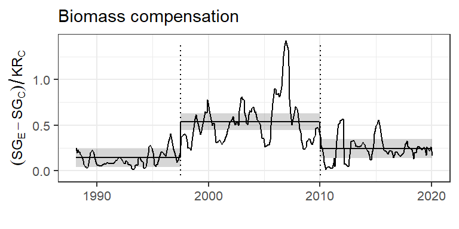

remotes::install_github('diazrenata/soar')Appendix S3 - Biomass analysis
Renata Diaz ![]()
Background
This is a modified subset of Appendix S3 from the article “Maintenance of community function through compensation breaks down over time in a desert rodent community” by Renata Diaz and S. K. Morgan Ernest, now published in Ecology (Diaz and Ernest 2022).
Compensation
Compensation refers to the degree to which the remaining species on kangaroo rat removal plots absorb resources made available via kangaroo rat removal (Figure 1). We fit a generalized least squares (of the form compensation ~ timeperiod; note that “timeperiod” is coded as “oera” throughout) using the gls function from the R package nlme (Pinheiro, Bates, and R Core Team 2023). Because values from monthly censuses within each time period are subject to temporal autocorrelation, we included a continuous autoregressive temporal autocorrelation structure of order 1 (using the CORCAR1 function). We compared this model to models fit without the autocorrelation structure and without the time period term using AIC. The model with both the time period term and the autocorrelation structure was the best-fitting model via AIC (Table 1), and we used this model to calculate estimates and contrasts using the package emmeans (Lenth et al. 2023) (Table 2, Table 3).
Data analysis
Data preparation
The following code downloads the data and prepares the compensation data frame for analysis.
If needed, install the soar package:
Data can be downloaded directly from the Portal data repository:
plotl <- get_plot_totals(currency = "biomass")
plot_types <- list_plot_types() %>% filter(plot_type == "EE")For interpretability, translating the era and treatment “names” as RMD coded them for analysis to the corresponding dates:
oera_df <- data.frame(
oera = c("a_pre_pb", "b_pre_reorg", "c_post_reorg"),
`Timeperiod` = c("1988-1997", "1997-2010", "2010-2020")
)
oplot_df <- data.frame(oplottype = c("CC", "EE"),
`Treatment` = c("Control", "Exclosure"))
contrasts_df <- data.frame(
contrast = c(
"a_pre_pb - b_pre_reorg",
"a_pre_pb - c_post_reorg",
"b_pre_reorg - c_post_reorg"
),
Comparison = c(
"1988-1997 - 1997-2010",
"1988-1997 - 2010-2020",
"1997-2010 - 2010-2020"
)
)Because there are 5 exclosure plots and 4 control plots in these data, we remove 1 exclosure plot to achieve a balanced design. From the 5 possible exclosures to remove, we randomly select 1 using the seed 1977 (the year the Portal Project was initiated).
plot_types <- plot_types %>%
filter(plot_type == "EE")
set.seed(1977)
remove_plot <- sample(plot_types$plot, 1, F) # results in removing plot 19
plotl <- plotl %>%
filter(plot != remove_plot)Finally, take treatment-level means and calculate the compensation variable:
# Treatment-level means:
treatl <- plots_to_treatment_means(plotl)
# Format column types
treatl <- treatl %>%
mutate(censusdate = as.Date(censusdate),
oera = ordered(oera),
oplottype = ordered(oplottype))
compensation <- get_compensation(treatl)GLS model
The following code fits the GLS models:
comp_mean_gls <-
gls(smgran_comp ~ oera,
correlation = corCAR1(form = ~ period),
data = compensation)
comp_mean_gls_notime <-
gls(smgran_comp ~ 1,
correlation = corCAR1(form = ~ period),
data = compensation)
comp_mean_gls_noautoc <-
gls(smgran_comp ~ oera, data = compensation)
comp_mean_null <- gls(smgran_comp ~ 1, data = compensation)Model comparison via AIC:
compensation_comparison <- data.frame(
`Model specification` = c(
"intercept + timeperiod + autocorrelation",
"intercept + autocorrelation",
"intercept + timeperiod",
"intercept"
),
AIC = c(
AIC(comp_mean_gls),
AIC(comp_mean_gls_notime),
AIC(comp_mean_gls_noautoc),
AIC(comp_mean_null)
)
)Calculate estimates:
comp_mean_gls_emmeans <- emmeans(comp_mean_gls, specs = ~ oera)
compensation_estimates <- oera_df %>%
left_join(as.data.frame(comp_mean_gls_emmeans)) %>%
select(-oera)Calculate contrasts:
compensation_contrasts <-contrasts_df %>%
left_join(as.data.frame(pairs(comp_mean_gls_emmeans))) %>%
mutate(p.value = round(p.value, digits = 4)) %>%
select(-contrast)Results
Tables
| Model.specification | AIC |
|---|---|
| intercept + timeperiod + autocorrelation | -17.623354 |
| intercept + autocorrelation | -3.297103 |
| intercept + timeperiod | 92.184205 |
| intercept | 207.804481 |
| Timeperiod | emmean | SE | df | lower.CL | upper.CL |
|---|---|---|---|---|---|
| 1988-1997 | 0.1435663 | 0.0511419 | 39.40368 | 0.0401558 | 0.2469767 |
| 1997-2010 | 0.5366915 | 0.0452745 | 42.04303 | 0.4453267 | 0.6280564 |
| 2010-2020 | 0.2441751 | 0.0517205 | 41.30488 | 0.1397469 | 0.3486034 |
| Comparison | estimate | SE | df | t.ratio | p.value |
|---|---|---|---|---|---|
| 1988-1997 - 1997-2010 | -0.3931253 | 0.0673811 | 43.35973 | -5.834358 | 0.0000 |
| 1988-1997 - 2010-2020 | -0.1006089 | 0.0727090 | 40.49222 | -1.383719 | 0.3588 |
| 1997-2010 - 2010-2020 | 0.2925164 | 0.0678003 | 44.56438 | 4.314383 | 0.0003 |
Figures

References
Diaz, Renata M., and S. K. Morgan Ernest. 2022. “Maintenance of Community Function Through Compensation Breaks down over Time in a Desert Rodent Community.” Ecology 103 (7): e3709. https://doi.org/10.1002/ecy.3709.
Lenth, Russell V., Ben Bolker, Paul Buerkner, Iago Giné-Vázquez, Maxime Herve, Maarten Jung, Jonathon Love, Fernando Miguez, Hannes Riebl, and Henrik Singmann. 2023. “Emmeans: Estimated Marginal Means, Aka Least-Squares Means.”
Pinheiro, José, Douglas Bates, and R Core Team. 2023. Nlme: Linear and Nonlinear Mixed Effects Models.